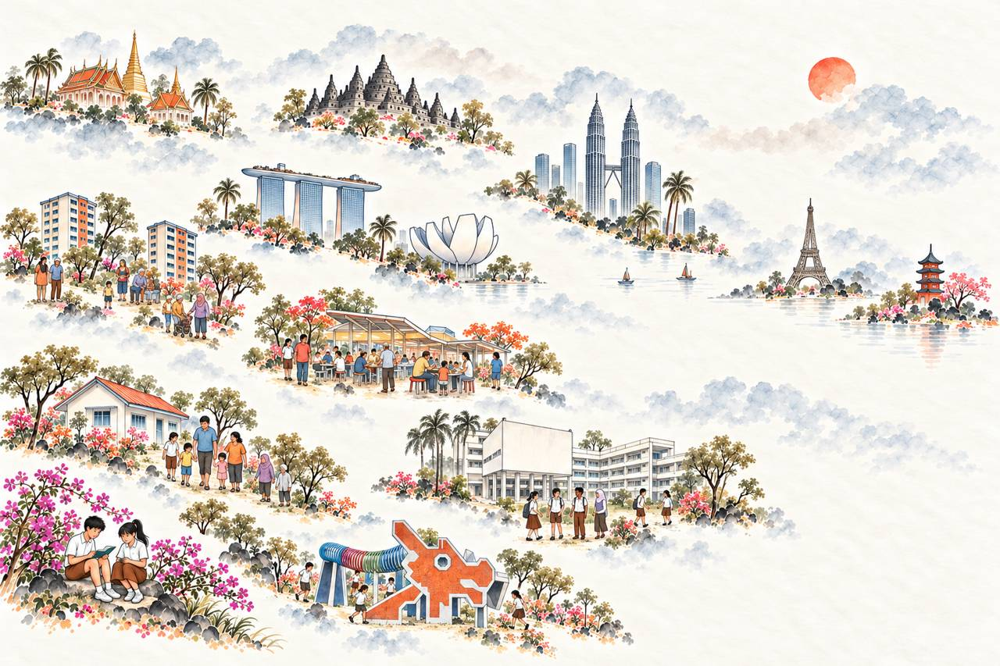

A wider world unfolds from the bottom-left.

Design study: six quarter-radial scopes begin at the bottom-left. Open handscroll composition uses similarly sized landmark vignettes and soft washes instead of perspective scaling or drawn boundaries. Selection adds a feathered warm golden glow, without outlines. Interaction bands are approximate. Buttons preview selection; lesson navigation will be connected during production integration. Dark mode retains the parchment illustration with dark surrounding panels. Earlier studies are preserved in the design gallery.